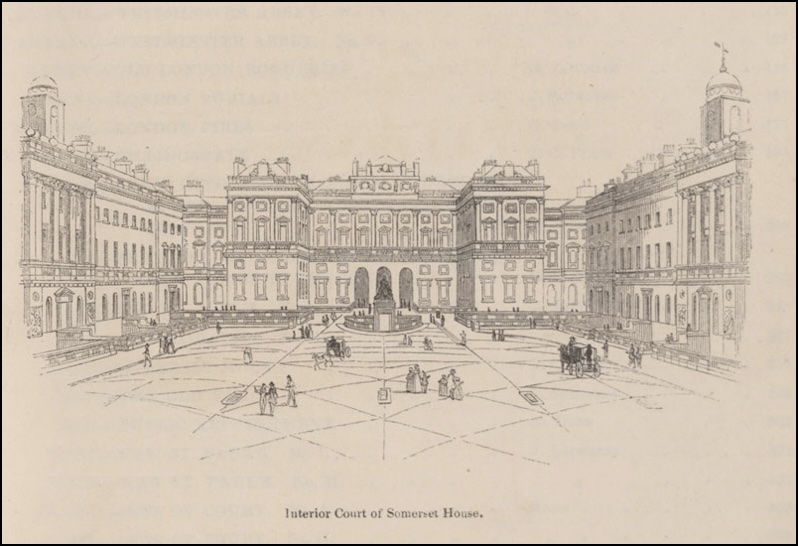

Moment 2 - 1828: The financial and political networks which created King’s
An Introduction to Moment 2
King’s College London emerged from a spirit of reform amidst widespread upheaval. The end of the Napoleonic wars in 1815 had led to social turmoil across Europe and to an eventual restructuring of European universities. Britain was not immune. In Scotland, the liberal arts Lernfreiheit model that had developed in the eighteenth century was being increasingly questioned by Tory reformers keen to establish a more uniform centralised system, while, in England, campaigners turned their attention to challenging the dominance of Oxford and Cambridge.1 These long-established and exclusive institutions were seen as bastions of landed elitism, open only to Anglicans, and out of touch with the rapidly changing social, industrial, and intellectual world. The solution, reformers felt, was to establish a new university in Britain’s under-served capital.
The first such college was University College, established by Whig politician Henry Brougham and poet Thomas Campbell in 1826. In 1819, across the Atlantic, Thomas Jefferson had established the secular University of Virginia with the aim of freeing intellectual study from the constraints of religion. Keen not be outdone by their former colony, Brougham and Campbell, were soon following suit, establishing University College on similar secular lines. Yet, in a time of social unrest and rapid urbanisation, this shift away from religion appalled many of the British establishment and seemed to be yet another sign of the disintegration of society. While many reformers supported the expansion of higher education to the aspiring middle classes, the more religious among them were concerned that an absence of religious instruction would not just weaken the hold of Anglicanism on society but would threaten the very fabric of the nation. In response, a group of men led by then prime minister, the Duke of Wellington and supported by the ecclesiastical hierarchy as well as by the King, came together to found King’s College with the aim of providing students not just with instruction in literature and science but with an education ‘that would give them a knowledge of God, and would teach them to live such a life as gives them hope of mercy hereafter.’2
The focus on religion reflected the fervour of the times. While, as the establishment of University College showed, there was a growing secular movement within Victorian society, the early nineteenth century was an intensely religious age. It was also a period of imperial and national ambition, and both coincided in the promotion of ‘character’ seen as integral to national success. The model man was strong and righteous, self-restrained and persevering, honest and unselfish, and courageous and dutiful. Character was something that could be fostered in the young and retooled in the service of the nation. In teaching young men ‘the duties’ they owe to their neighbours and educating them in morals, the founders of King’s College were promoting ideas that would stand their students in good stead as future directors of imperial endeavour.
The establishment of these new universities demonstrates the significance of associational philanthropy to our analysis of the Victorian state. The early nineteenth century was characterised by the emergence of ‘model institutions’ that drew on imperial, national, and transnational influences and relationships and that acted ‘as a key technology of social reform’.3 Formed in the same environment and subject to similar transnational inspiration, the new London universities represented a different level of attempted reform. The battle between supporters of the rival institutions was unsurprisingly satirised in the press as a conflict between the ‘sense and science’ of the modern men at University College and the ‘money and interest’ of the ultra-Protestant wing of the Anglican church but there was not as wide a gulf between the two as it might have seemed. Both were committed to widening participation in university education and, as the new [King’s database](entity database) shows, both were linked through social groups. The elites of Victorian Britain were intimately connected in multiple ways. They attended the same schools, went to the same universities, married into each other’s families, served on the same committees, and spent their time furthering a wide variety of similar yet different projects experimenting with ideas of social reform. These connections were leveraged effectively in the operation and funding of the college. The Council composed of seventeen governors, twenty-four members and a treasurer, was a Who’s Who of political and reforming society, while the funds for the college came from not just the nobility, the ecclesiastical hierarchy and the clergy but also the middle classes eager to benefit from more accessible education.
The council included members such as Sir John Richardson who acted as council for radical William Cobbett and was a prominent critic of Catholicism, as well as liberal Tory, sinologist and supporter of Catholic emancipation, Sir George Thomas Staunton. Popular Tory reformer and judge Nicholas Conyngham Tindal, who had been a pupil of Richardson’s was also on the council, as was self-made man and former London mayor, John Atkins, nicknamed ‘Hell-fire Jack’. Inventor, merchant and Bank of England director, William Cotton, was an ardent philanthropist. Deeply religious and a fierce patriot, he funded and built bathhouses and model lodging houses to help the working classes with the aim of furthering national renewal, arguing that ‘until the rich do all they can for the poor, we are not competent to say that poverty is any bar to the spread of Christianity’.4 Like fellow council member, Archdeacon Cambridge, he was associated with the Hackney Phalanx and together with another council member, George D’Oyly was one of the committee members for the Society for the Propagation of the Gospel. To explore more connections, follow this [link](link to database).
- Robert Anderson, ‘Professors and examinations: ideas of the university in nineteenth-century Scotland’, History of Education, 46/1 (2017), pp. 21-38.↩
- 21 June 1828, The Standard, ‘New London University’↩
- Tom Crook, ‘Model Institutions and the Geography of Social Reform in Early Victorian Britain’, The Historical Journal 62/3 (2019), pp. 789-812.↩
- ODNB, A.C. Howe, ‘William Cotton’, https://doi.org/10.1093/ref:odnb/6432.↩